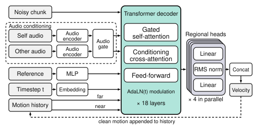
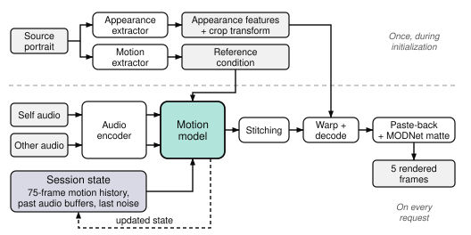
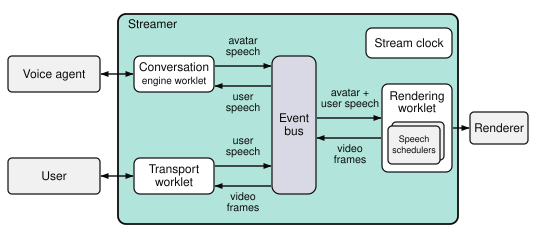

Open Stack for Real-Time Interactive Avatars
Avaturn Live · 2026 · * Core contributors: co-wrote the paper
Talking-head and dyadic models now achieve real-time inference, yet fast motion generation alone does not produce an interactive conversation. A live system must synchronize the model's output with speech from an external voice agent, schedule video frames for playback, and handle interruptions. We introduce AVTR-1, an open stack for real-time interactive avatar conversations, built around a compact 153M-parameter autoregressive flow-matching motion generator conditioned on both participants' audio. We adapt its audio encoder for streaming through self-distillation. The stack turns the model's chunk-based generation into a continuous, synchronized audio-video stream driven by an external voice agent, and we analytically derive its contribution to the user-facing latencies and validate the resulting bounds with two commercial voice agents. Further experiments demonstrate that AVTR-1 leads the compared dyadic systems on all reported visual-quality metrics and most conventional listening-motion metrics while remaining competitive in lip synchronization. Its inference runtime operates in real time on data-center and consumer GPUs. However, conventional listening metrics do not establish whether the paired speaker's speech contributes to generated motion. We therefore introduce the Reference-Based Directed Granger Gain (R-DGG), which measures the additional predictive information carried by speaker speech after accounting for listener history and speaker motion. R-DGG finds statistically supported predictive dependence for recorded listeners and all evaluated dyadic systems, but not for talking-head generators without paired audio or mismatched speaker–listener pairs. We release the model weights, renderer, and serving backend under component-specific licenses.
The AVTR-1 motion model is a 153M-parameter conditional flow-matching Transformer that autoregressively generates five-frame motion conditioned on two separate audio channels called self and other audio. The motion model is a pre-norm Transformer decoder with 18 layers, 8 heads, and width 512. Each block receives past motion, audio features for both channels, and a static reference. We divide the 75-frame motion history between a near path over the last five frames and a far path over the earlier 70. The flow-matching timestep modulates each sub-block through adaptive layer normalization (AdaLN), with separate scale and shift predicted for each. The outputs are concatenated to form the final 42-dimensional velocity prediction.

We call the inference-side component that serves the motion model the renderer. It registers the source portrait once, then generates five frames at a time. For each motion chunk, the two audio channels are batched into one audio encoder call. Each request predicts a motion chunk, renders it with the cached LivePortrait appearance, and returns the updated state required by the next request.

The streamer's worklet and event-bus architecture. A transport, a conversation engine, and a rendering worklet communicate only through a central event bus. The conversation engine worklet adapts a voice agent, the rendering worklet holds one speech scheduler per speech stream, avatar and user, and drives the renderer, returning fused audio-video frames. Worklets read the stream clock directly.

Per-chunk latency and real-time factor across GPUs, measured offline on one five-frame (200 ms) chunk.
| GPU | Latency per chunk | Real-time factor |
|---|---|---|
| NVIDIA L40S | 71 ms | 2.81× |
| NVIDIA A100 | 91 ms | 2.20× |
| NVIDIA RTX 4060 Ti | 162 ms | 1.24× |
| NVIDIA RTX 3070 | 180 ms | 1.11× |
| NVIDIA L4 | 202 ms | 0.99× |
| NVIDIA RTX 3060 Ti | 207 ms | 0.97× |
| NVIDIA RTX 4060 | 232 ms | 0.86× |
★ = paired audio. For AvatarForcing*, we extend the hardcoded RoPE range and increase the maximum generation length from 30 to 600 seconds so that it can process full conversations.
AVTR-1 achieves the strongest overall performance among the compared dyadic systems, leading all visual-quality metrics and most conventional listening-motion metrics while remaining competitive in lip synchronization. We evaluate on 184 speaker–listener pairs from the conversational, improvised subset of the Seamless Interaction test split.
Visual quality and lip synchronization. Best value among the dyadic systems (Paired audio = Yes) in green; talking-head baselines shown for context.
| Method | Paired audio | Visual quality | Lip synchronization | |||
|---|---|---|---|---|---|---|
| FID ↓ | FVD ↓ | CSIM ↑ | LSE-D ↓ | LSE-C ↑ | ||
| SoulX Lite | No | 12.1 | 89.3 | 0.91 | 6.74 | 3.38 |
| SoulX Pro | No | 9.4 | 53.6 | 0.93 | 7.35 | 3.09 |
| Ditto | No | 16.0 | 113.6 | 0.95 | 7.12 | 3.11 |
| FLOAT | No | 11.7 | 83.2 | 0.90 | 6.99 | 2.93 |
| AvatarForcing* | Yes | 14.4 | 85.8 | 0.77 | 7.32 | 2.41 |
| DyStream | Yes | 43.1 | 119.4 | 0.87 | 6.57 | 3.21 |
| AVTR-1 (Ours) | Yes | 14.3 | 76.8 | 0.94 | 7.08 | 3.28 |
Conventional listening-motion metrics among dyadic systems. For listening metrics without an arrow, values closer to ground truth are better. The pose components of PFD and variance are reported in units of 10−2. Best value among the dyadic systems in green.
| Method | rPCC ↓ | PFD ↓ | SID | Var | ||||
|---|---|---|---|---|---|---|---|---|
| Exp | Pose | Exp | Pose | Exp | Pose | Exp | Pose | |
| AvatarForcing* | 0.109 | 0.163 | 37.51 | 7.560 | 4.749 | 3.848 | 1.213 | 2.099 |
| DyStream | 0.128 | 0.141 | 40.87 | 7.598 | 4.497 | 3.606 | 1.164 | 1.731 |
| AVTR-1 (Ours) | 0.083 | 0.140 | 25.98 | 6.417 | 4.970 | 3.254 | 1.313 | 0.930 |
| Ground truth | 0.000 | 0.000 | 0.000 | 0.000 | 5.231 | 4.001 | 1.463 | 1.789 |
A listener can follow the other participant's motion without responding to their speech. The motion metrics above cannot distinguish this behavior from a speech-conditioned response. To address this limitation, the Reference-Based Directed Granger Gain (R-DGG) measures how much the speaker's speech improves prediction of the listener's current motion after accounting for the listener's own history and the speaker's motion. R-DGG passes its validation check: the ground-truth interval remains above zero, while the interval for GT × other includes zero. All three dyadic systems have intervals above zero, while the intervals for every talking-head generator include zero. The intervals of the three dyadic systems overlap, so these results do not support a reliable ranking among them.
Values in units of 10−4 nats. p = Pr(G ≤ 0). Green marks estimates whose 95% interval excludes zero.
| Method | Paired audio | R-DGG | Bootstrap percentile | p | ||
|---|---|---|---|---|---|---|
| 2.5% | 50% | 97.5% | ||||
| AvatarForcing* | Yes | 0.32 | 0.07 | 0.32 | 0.56 | 0.008 |
| AVTR-1 (Ours) | Yes | 0.57 | 0.19 | 0.57 | 0.98 | 0.002 |
| DyStream | Yes | 0.48 | 0.06 | 0.49 | 0.93 | 0.011 |
| Ditto | No | 0.06 | −0.20 | 0.06 | 0.31 | 0.335 |
| FLOAT | No | 0.01 | −0.33 | 0.00 | 0.42 | 0.491 |
| SoulX Lite | No | −0.22 | −0.54 | −0.22 | 0.21 | 0.857 |
| SoulX Pro | No | 0.18 | −0.34 | 0.17 | 0.58 | 0.239 |
| Ground truth | — | 0.72 | 0.32 | 0.72 | 1.12 | <0.001 |
| GT × other | — | −0.11 | −0.56 | −0.11 | 0.45 | 0.659 |
@misc{kravtsov2026avtr1openstackrealtime,
title = {AVTR-1: Open Stack for Real-Time Interactive Avatars},
author = {Artem Kravtsov and Dmitrii Ziganshin and Vsevolod Poletaev
and Gleb Balitskiy and Anastasia Tikhonova and Egor Burkov
and Vadim Lebedev},
year = {2026},
eprint = {2609.22913},
archivePrefix = {arXiv},
primaryClass = {cs.CV},
url = {https://arxiv.org/abs/2609.22913}
}